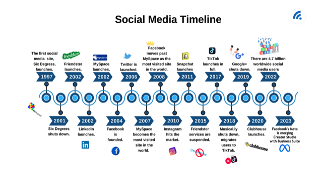

Social Media: A Glimpse
into the Past

Social media has the power to connect you to the entire world through a single tap. However, it has gone through a long journey of development, rejections, modifications, and definitely not to forget, controversies. The first social media platform was launched in 1997 and opened the doors for a completely new mode of communication as well as a communique. Human beings were suddenly able to connect with their friends and even strangers without leaving the comfort of their houses.
Regrettably, as it was ahead of its time, the platform didn't
benefit and failed to monetize its popularity. Unfortunately, it was
shut down in 2001. However, Six Degrees laid the basis for the
social media landscape, we understand today.

Following the arrival of Six Degrees, running a blog website
consisting of LiveJournal started to gain popularity. The early
2000s noticed the launch of several other social media structures.
MySpace, which was released in 2003, allowed users to customize
their profiles with music, pics, and animation. LinkedIn, which was
additionally released the same year, aimed to connect human beings
professionally. The release of Facebook in 2004 gave substantial
hype to the use of social media. It was created by Mark Zuckerberg
while he was a pupil at Harvard. Facebook; to begin with, allowed
university students to enrol. Later, it speedily elevated to
different universities and eventually became an almost constant
application on the phones of most individuals above thirteen.
YouTube was released in 2005 and gave customers a new manner of
creating, viewing, and sharing their opinions, ideas, and
experiences through videos. The give-up of the decade noticed an
upward push to the use of social media in famous structures
including Twitter (now X), Instagram, Pinterest, and Snapchat. And
today, after an entire decade of scrolling, thumbs-upping, swiping,
and double-tapping, it is miles secure to say that social media is
not going anywhere anytime soon.